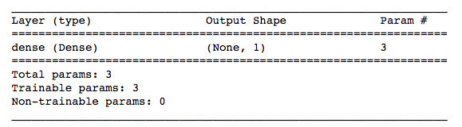
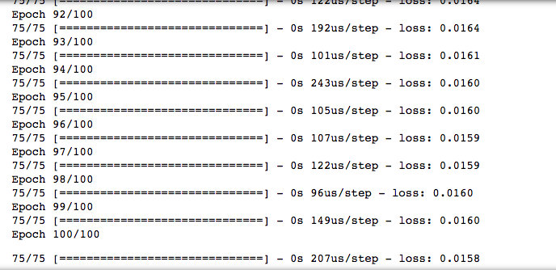

4.训练模型
4.1 建立模型
我们首先搭建一个最简单的 线性模型 来进行鸢尾花的 二分类。模型的数学表示：
$$ species = w1\times(petal{length}) + w2\times(petal{width}) + b $$
- 当取
Iris-setosa类型的鸢尾花花瓣长度和花瓣宽度带入上面的式子时，species的计算结果为0 - 当取
Iris-versicolor类型的鸢尾花花瓣长度和花瓣宽度带入上面的式子时，species的计算结果为1
模型将通过不断的训练，找出符合上述条件的三个参数 $ w_1,w_2,b$
在keras中搭建线性模型很简单，只需要加一个核心网络层 Dense 即可。在Dense中，参数unit代表输出的维度，参数input_dim代表输入的维度。
针对我们目前的数据集，我们需要输入2个特征（petal_length , petal_width），输出1个类别（0代表setosa，1代表versicolor）
选中 3.训练模型 单元格，插入新的代码单元格，输入以下代码：
# 搭建模型
model = tf.keras.Sequential()
model.add(tf.keras.layers.Dense(units=1, input_dim=2))
model.summary() # 查看模型结构
运行后可以得到模型的摘要：

4.2 编译模型
针对线性模型，我们选用均方差作为损失函数，随机梯度下降作为优化器来编译我们的模型。
继续插入新的代码单元格，输入模型编译的语句：
# 编译模型
model.compile(optimizer='sgd', loss='mse')
4.3 训练模型
继续插入新的代码单元格，输入模型编译的语句：
# 训练模型
model.fit(X_train, y_train, epochs=100)
fit 函数用来训练model，必要的参数为特征和标签。epochs 代表训练的 轮数。
训练的结果为：

参考文献
1.Keras中文文档 https://keras.io/zh/